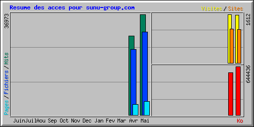

| Résumé par mois | ||||||||||
|---|---|---|---|---|---|---|---|---|---|---|
| Mois | Moyenne journalière | Totaux mensuels | ||||||||
| Hits | Fichiers | Pages | Visites | Sites | Ko | Visites | Pages | Fichiers | Hits | |
| Mai 2011 | 1192 | 983 | 162 | 51 | 1104 | 644436 | 1588 | 5049 | 30498 | 36973 |
| Avr 2011 | 1454 | 1207 | 195 | 80 | 1125 | 563066 | 1612 | 3902 | 24159 | 29080 |
| Totaux | 1207502 | 3200 | 8951 | 54657 | 66053 | |||||
| Generated by Webalizer Version 2.21 |